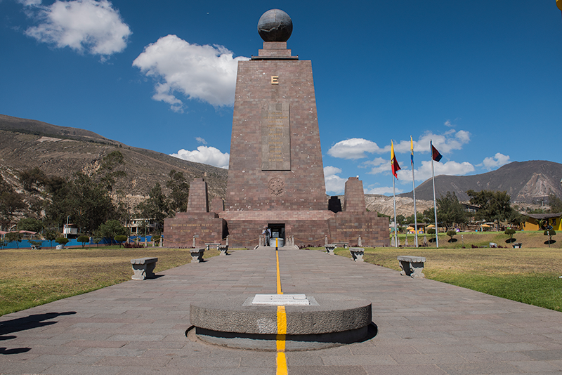
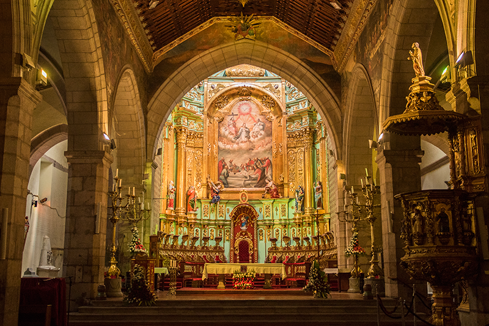

Quito
Contents
Quito¶
Quito, oficialmente San Francisco de Quito, es la capital de la República del Ecuador, de la Provincia de Pichincha y la capital más antigua de Sudamérica. Es la ciudad más poblada del Ecuador desde finales del año 2018 con más de 2,8 millones de habitantes en el área urbana, y más de 3 millones en todo el Área metropolitana. Además, es la capital de la Provincia de Pichincha. Está ubicada sobre la hoya de Guayllabamba, en las laderas occidentales del estratovolcán activo Pichincha, en la parte oriental de los Andes a una altitud promedio de 2850 m s. n. m. La ciudad está dividida en 32 parroquias urbanas y 33 parroquias rurales, las cuales se subdividen en barrios. Quito es el epicentro político, económico, administrativo, artístico, deportivo y cultural de Ecuador. Alberga los principales organismos gubernamentales, administrativos y culturales. Además, la mayoría de empresas transnacionales que trabajan en Ecuador tienen su matriz en la urbe. La fecha de su primera fundación es incierta; los registros más antiguos se hallan en la hacienda del Inga alrededor del año 1030 a.C. El Inca Huayna Capac convirtió a Quito en una ciudad importante del norte del Tahuantinsuyo, territorio del imperio Inca, y durante varios lapsos de tiempo se movilizó entre esta y Tomebamba, esta última capital norteña del imperio. Sin embargo, se utiliza la conquista española de la ciudad, el 6 de diciembre de 1534, como su nacimiento y fecha de fundación. La Escuela Quiteña es como se ha llamado al conjunto de manifestaciones artísticas y de artistas que se desarrolló en el territorio de la Real Audiencia de Quito. La Escuela Quiteña alcanzó su época de mayor esplendor entre los siglos XVII y XVIII, llegando a adquirir gran prestigio entre las otras colonias americanas e incluso en la corte española de Madrid. El 24 de mayo de 1822 el ejército independentista comandado por el mariscal Antonio José de Sucre venció a las fuerzas realistas leales a España quienes estaban bajo las órdenes de Melchor de Aymerich, en la denominada Batalla de Pichincha. Gracias a la victoria de las tropas grancolombinas, se consiguió la liberación de Quito y la independencia de las provincias pertenecientes a la Real Audiencia de Quito. El 13 de mayo de 1830 se crea la República del Ecuador, con Quito como capital tras separarse de la Gran Colombia. Es la primera ciudad declarada, junto a Cracovia en Polonia, como Patrimonio de la Humanidad por la Unesco, el 8 de septiembre de 1978. En 2018, Quito ha sido evaluada dentro del concepto de ciudades mundiales o globales como una ciudad beta, según el estudio de GaWC, siendo la ciudad mundial más globalizada del Ecuador, a la par de ciudades latinoamericanas como la Ciudad de Panamá y San José.
El Panecillo¶
Ciudad Mitad del Mundo¶

Catedral Metropolitana de Quito¶
